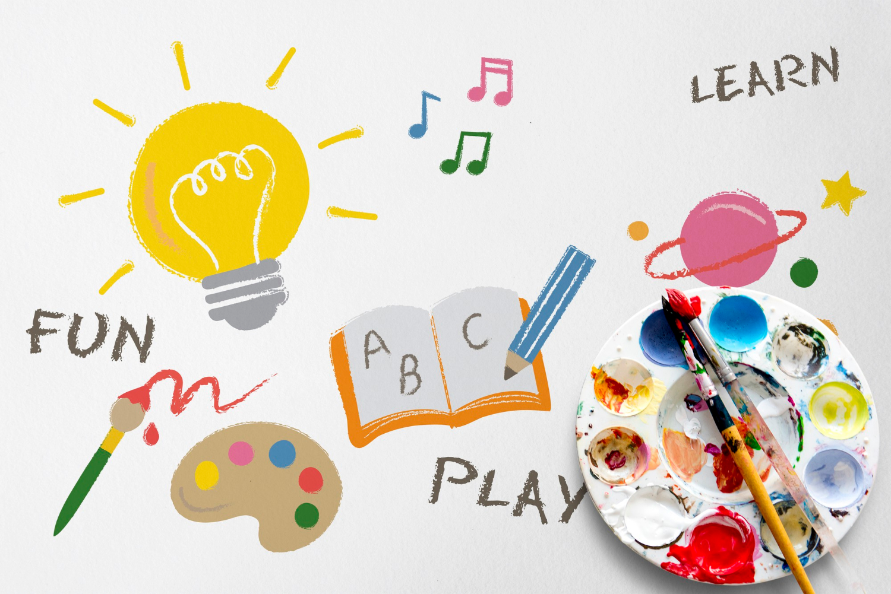
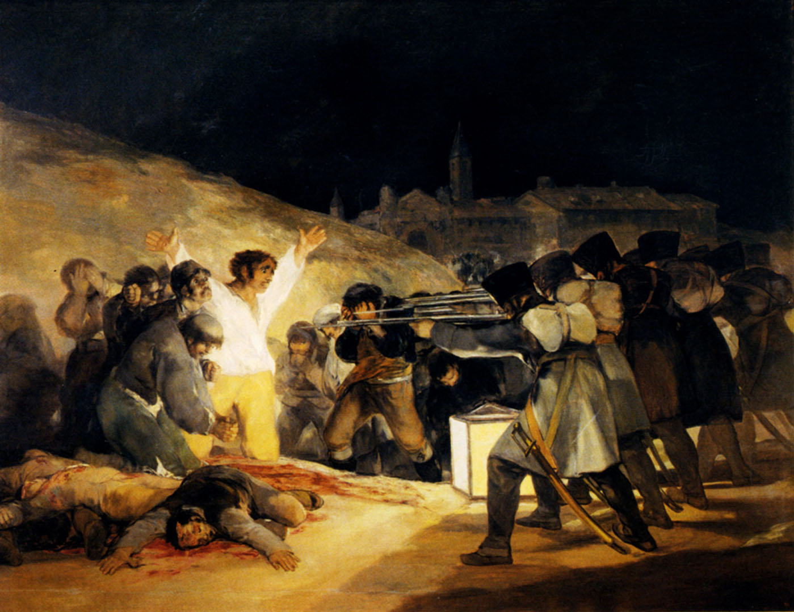
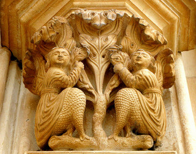
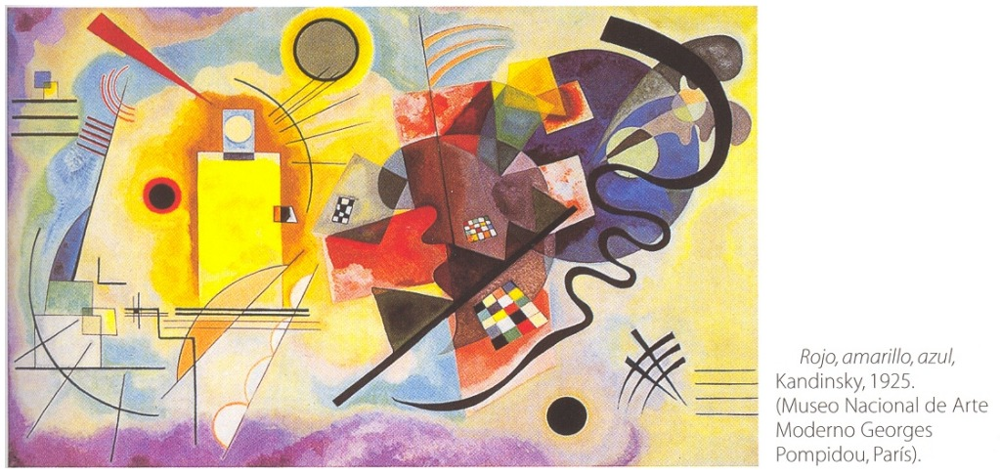
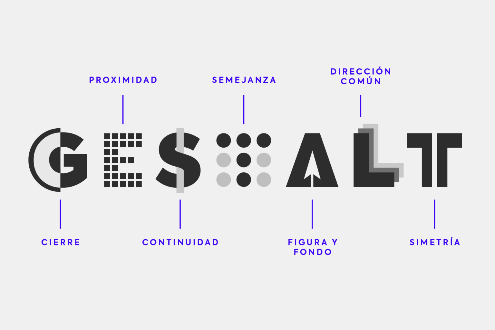
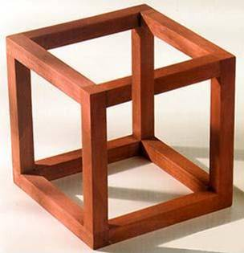
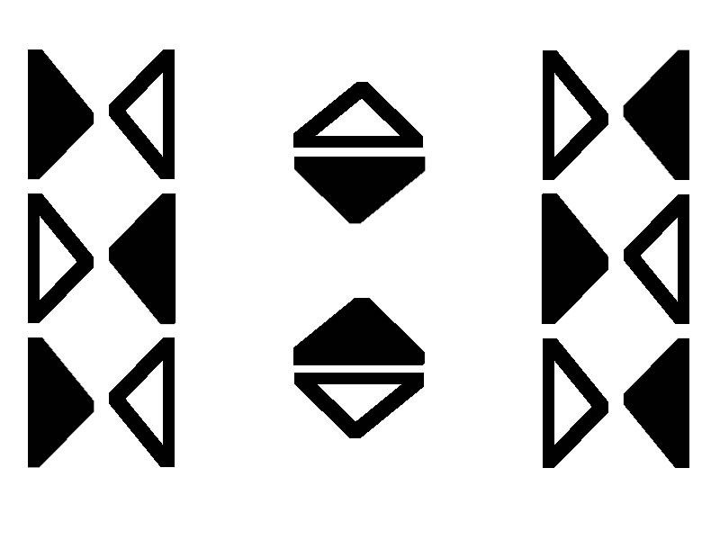
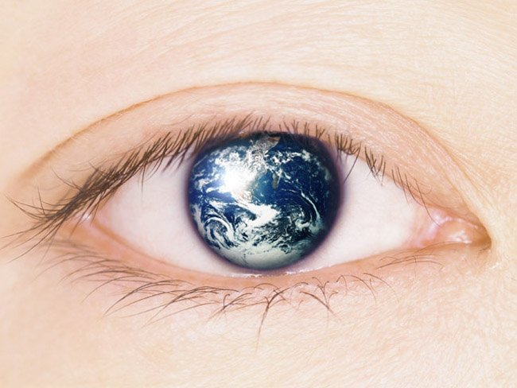

Unidad 1
Introducción a la materia
Primer día de clases, 2 de febrero, 2023

El primer día de clases cada estudiante se presentó con su nombre, carrera y qué espera de la materia. La profesora Keyla nos dio la introducción a la materia, hablamos de qué es el arte, símblos, signos, cómo el ser humano ha tenido la necesidad de plasmar lo que siente a través de lo que hoy llamamos arte. Hablamos del plan de estudio de la materia, o sea, qué veremos y qué haremos. Se nos dijo que iremos a un museo y teatro como partes de la asignatura para poder apreciar las artes y discutir.
La función y clasificación de las artes
La función del arte, 9 de febrero, 2023
Al inicio de la clase hablamos acerca de la lectura que nos indicó la profesora acerca del ensayo de la función del arte de Ernst Fisher. Hablamos de lo que entendimos de la lectura, qué nos llamó más la atención y empezamos a definir el arte y por qué apareció en los humanos.
Simbología y signos en el arte, 9 de febrero, 2023

Luego pasamos a hacer algunos analisis de pinturas y esculturas hechas en distintos periodos de la historia para encontrar significados en las obras basándonos en los contextos que fueron creadas dichas obras. En esta dinamica analizamos obras como "guernica" de Picasso o la pintura de los fusilamientos del 3 de mayo por Francisco de Goya.
Clasificacion del arte, 9 de febrero, 2023
Por último, vimos las clasificaciones del arte:
- Bidimensional: Se ve de dos dimensiones que pueden ser: ancho y largo o alto y ancho.
- Tridimensional: Tienen ancho, profundidad y altura, usualmente son estatuas.
- Espaciales: Se ven en la arquitectura, se centran en crear espacios artísticos. Ejemplo: una catedral.
- Cinéticas: estas funcionan con el movimiento de algún cuerpo, puede ser con movimmiento de la obra misma o con el movimiento del expectador.
- Mixta: cuando se dice mixta se refiere al uso de muchos elementos artisticos en una sola creación, un ejemplo de este arte es el teatro que tiene vestuario, actuación, iluminacion, manualidades, ambientación, etcétera.
Simetria, ritmo y los elementos de las artes plásticas
Simetria, ritmo, 16 de febrero, 2023
Primero hablamos de la simetria, vimos qué es y cómo se ve:
La profesora nos mostró la simetría con esculturas y nos dijo que la simetría es cuando se divide un cuerpo en dos partes iguales y tiene lo mismo de ambos lados.
Elementos de las artes plásticas, 16 de febrero, 2023
Elementos de las artes plásticas, 16 de febrero, 2023
Por último, vimos los elementos que se encuentran en las artes plásticas:
- Línea: Comparamos pinturas en los que se destacan las líneas d epinturas que no las tienen.
- Color: Hablamos un poco de la tepría de color y de cómo la buena selección de colores llaman la tención de los espectadores.
- Tema: Vimos que es de lo que trata la obra
- Forma: La estructura de la obra.
- Textura: Hablamos de las pinturas y cómo controlando el tipo de pinceladas se peuden crear texturas especiales.
- Perspectiva: Vimos que es una ilusión óptica que se crea para dar la sensación de estar dentro de la pintura.
- Espacio: Se refiere al espacio desarrollado en la obra.
- Concepto: significado de la obra.
Leyes de la Gestalt, cultura visual y funciones del arte
Leyes de la Gestalt, 23 de febrero, 2023
Primero hablamos de las leyes de la Gestalt
Las leyes de la Gestalt, para la psicología de la Gestalt, son una serie de reglas que explican el origen de las percepciones a partir de los estímulos. Existen múltiples reglas particulares, que se fundamentan en dos reglas generales: la ley de buena forma y la ley de figura y fondo.
Elementos de las artes plásticas, 16 de febrero, 2023
Las distintas leyes son:
Por último, vimos los elementos que se encuentran en las artes plásticas:
- Ley de la buena forma: Nuestro cerebro descompone las caras de este cubo en cuadrados y línes para comprender su estructura. 
- Ley de contraste: Se puede diferenciar el tamaño del chihuahua con el tamaño del otro perro más grande gracias a que se contrastan uno con el otro.
- Ley de figura fondo: Con un buen uso de la estructura de la figura de un objeto en un fondo, se puede lograr representar una o más cosas en una sola obra
- Ley de proximidad: El humano ve los grupos de formas que están más unidos mejor que ver todas las formas como un todo, es decir, es más fácil ver tres grupos de cuatro círculos que ver un grupo de doce círculos.
- Ley de cierre: Se puede ver un cuadrado a pesar de que no está el cuadrado, sino que los cuato circulos no están cerrados.
- Ley de similitud: Los elementos se perciben como parte de un mismo grupo, en este caso grupos verticales.
- Ley de continuidad: Podemos conectar este conjunto círculos trazando ua línea entre ellos para formar una continuidad.
- Ley de movimiento común o destino común El conjunto de flechas indica a moverlos ojos en su dirección
- Ley de simetría: Se puede ver lo mismo a ambos lados de la imagen si se parte en dos trazando una linea vertical en el medio de la imagen. 
La cultura visual, 23 de febrero, 2023
Repasamos este tema en el que se describe cómo nuestra generación consume demasiado contenido visual
Vemos contenido visual en nuestros dispositivos electrónicos, en las calles cuando vemos anuncions, las peliculas, promociones, etcétera.
Funciones del arte, 23 de febrero, 2023
Definimos las 6 funciones del arte con algunos ejemplos:
- Estética:disfrute del arte.
- Utilaria: arquitectura y artes aplicadas.
- Mágica religiosa: de este arte se espera un milagro (esta función es antigüa)
- Didáctica: usada en la edad media, ejemplo: catedral con elementos en su estructura que muestra información
- Persuasiva: anuncios, marketing, promociones.
- Ideológica: arte aúlico ejemplo: justiniano y su corte
@Seb.devs
8 Posts
153 Likes